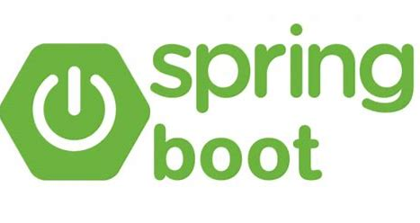
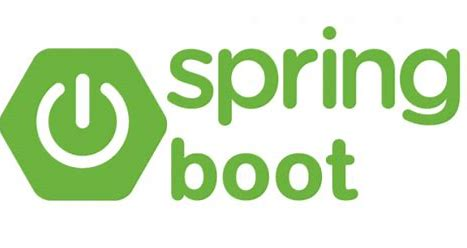

How
We will describe how to finish our plan
 

1. Resources and Tools
-
Description: Java is a general-purpose programming language that is class-based, object-oriented. (link)
Why we use: popular, some of team members are skillful to use java.
Price : free
Version: 11
Alternatives: Python (link), ruby (link), php(link) -
Description: Spring boot is a back-end application framework for java platform. (link)
Why we use: Spring boot is most common in industry.
Version: 2.3.2
Price: free
Alternatives: javelin (link), ruby in rails (link) -
Description: Thymeleaf is a modern server-side Java template engine. (link)
Why we use: It is easy to learn and is fit for spring boot
Version: 3.0.11
Price: free
Alternatives: react (link), vue (link) -
Description: MyBatis is a persistence framework with support for custom SQL, stored procedures and advanced mappings. (link)
Why we use: mybatis can reduce our workload to access database.
Version: 3.5.5
Price: free
Alternatives: hibernate (link) -
Description: Maven is a dependency management tool
Why we use: it is useful for java programming
Version:
Alternatives: -
Description: Mysql is the world's most popular open source database. (link)
Why we use: popular, open source
Version: 8.0.21
Price: free
Alternatives: H2 (link), sqlite (link) And HTML, CSS
2. Collaborative Workspaces
Currently we are using MS Teams as the main channel for the group work, we also created a GitHub repository for sharing and editing the main site.
GitHub repository: link
Trello: link
3. Group Contract
Task List
Everyone will be responsible for his/her individual work, but group members should help each other and work together for an optimal final project. Individual group members should be listed with specific obs related to the final project so that it is clear that all know who is responsible for each task.
Group Constitution
This contract governs the group until the assigned project deadline. If the group separates or a member is dismissed. the basic contract laws remain intact for all parties. However, should a group member be dismissed from the group, work responsibilities may be required to shift.
Team Meeting Ground Rules
- This contract governs the group until the assigned project deadline. If the group separates or a member is dismissed. the basic contract laws remain intact for all parties. However, should a group member be dismissed from the group, work responsibilities may be required to shift.
- Everyone will be responsible for his/her individual work, but group members should help each other and work together for an optimal final project. Individual group members should be listed with specific obs related to the final project so that it is clear that all know who is responsible for each task.
- Keep issues and answer that arise in meetings in confidence within the team unless otherwise indicated
- Be honest and open during meetings
- Encourage a diversity of opinions on all topics.
- Give everyone the opportunity for equal participation
- Attend the meeting on time and promise not to quit early.
Article I: Absence Policy
The group must decide and document in this area how to handle problems associated with a group member that has excessive absences or fails to complete work because of absences.
Article Il: Work Policy
Each group member will work to the best of his / her ability - making sure to complete the work, ensure that it is up to standards, and it is completed with punctuality. Group members committing plagiarism are solely responsible and incur the punishment on their own.
| Name | Strengths | Areas to develop |
|---|---|---|
| Heran Wang | C, Java and HTML/CSS | JS , database |
| Yi Yang | C, HTML, CSS, python, java and Ruby on Rails | database |
| Le Gia Hung | HTML, CSS, Js, Java basis | |
| Mingxuan Zhou | C, Java and Python | Designing a well-organized database |
| Zhihao Liang | C, C++, javascript, python and java | thymeleaf |
| Yingjian Di | C, Java , python and database | design a full-featured application |